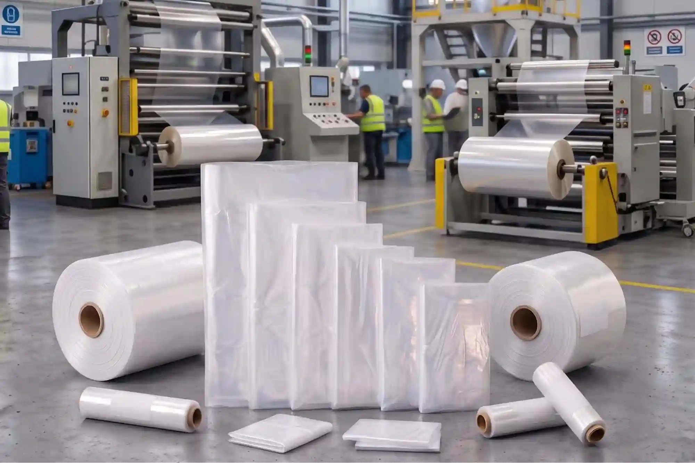
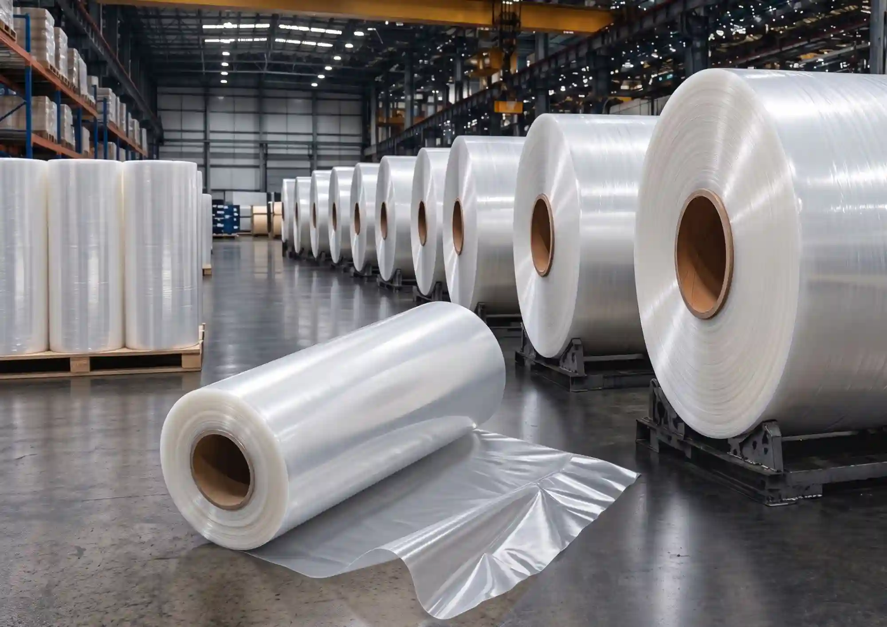
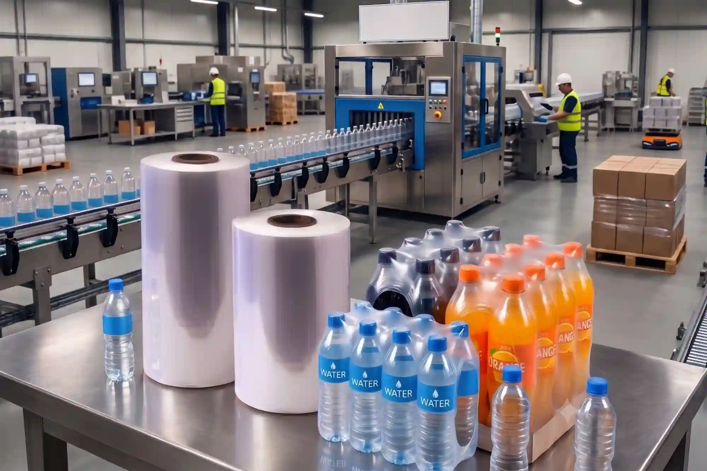
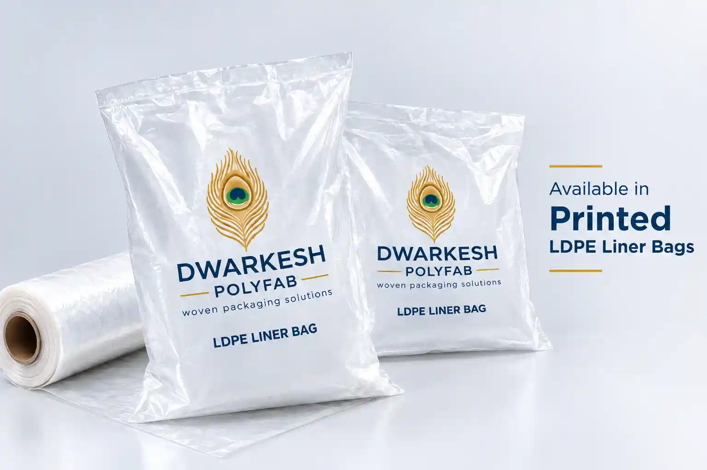

LDPE Liner Bag: Complete Buyer Guide for Indian B2B Buyers

LDPE liner bags and polyethylene liner rolls — manufactured to custom sizes at Dwarkesh Polyfab, Morbi, Gujarat.
Every purchasing manager who handles PP woven sacks, FIBC bulk bags or drum packaging faces the same core challenge — keeping the product inside dry, clean and intact from the factory floor to the customer's warehouse. The answer is an LDPE liner bag.
Whether you are packing 50 kg rice bags, 500 kg fertilizer FIBC bags or 200-litre chemical drums, the right polyethylene liner bag prevents moisture ingress, powder leakage and contamination — protecting both the product and your brand reputation.
This guide explains what LDPE liner bags are, where they are used, how to select the right specification, and what to look for when sourcing from a manufacturer.
Applications across industries · PP woven bag liner and FIBC liner use · How to choose thickness and material grade · Customization options · A practical buyer checklist · FAQs answered
What Is an LDPE Liner Bag?
An LDPE liner bag (Low Density Polyethylene liner) is a flexible, transparent or opaque inner bag made from LDPE or LLDPE resin. It is placed inside an outer packaging container — a PP woven sack, FIBC bulk bag, drum, or carton — to create a secondary barrier against moisture, dust, oxygen and contamination.
In Indian trade, these are also referred to as: LD liner bags, LD inner bags, PE liner bags, poly liner bags, woven sack inner liners, transparent LD bags and, in bulk packaging, FIBC liner bags or bulk bag liners.


Where Are LDPE Liner Bags Used?
LDPE liner bags are used wherever an outer container alone is not enough to fully protect the contents. The most common applications are:
1. PP Woven Bag Liner (Woven Sack Inner Liner)
A standard PP woven bag is strong but not moisture-proof on its own. Inserting an LDPE liner inside the woven sack adds a complete moisture barrier. This is standard practice in rice, flour, sugar, chemical and fertilizer packaging where even minor moisture contact damages the product.
2. FIBC Liner Bag (Bulk Bag Liner)
FIBC bags (jumbo bags / bulk bags) are used for large volume shipments of 500 kg to 1,500 kg. An LDPE liner bag inserted inside an FIBC protects fine powders like titanium dioxide, silica, food starch or chemicals from moisture and contamination. These are sometimes called FIBC liner bags or bulk bag liners in the export and logistics trade.
3. Drum and Barrel Liners
200-litre drums used for chemicals, edible oils and food ingredients are lined with heavy-duty LDPE drum liners to prevent the liquid or powder from contacting the drum surface, reduce cleaning costs and allow easy product removal.
4. Carton and Box Liners
Corrugated cartons used for frozen food, fresh produce, garments and dry goods are lined with gusseted LDPE bags to prevent condensation damage and keep contents contained if the box is punctured.
5. Industrial Storage and Transit Protection
Large heavy-duty polyethylene liner bags are used in warehouses to protect spare parts, machinery components, textiles and bulk granules during outdoor storage or long-distance road and sea transport.

Heavy-duty LDPE liner bags protecting machinery components, textiles and carton goods during industrial storage and transit.
Industries That Rely on LDPE Liner Bags
🌾 Food & Agri Processing
Rice mills, flour mills, sugar factories, spice processors and food grain exporters use food-grade natural LDPE liners inside woven sacks to maintain product hygiene and shelf life.
🧪 Fertilizer & Agro Chemicals
Fertilizer and agrochemical manufacturers use LDPE-lined woven bags to prevent moisture absorption of hygroscopic powders like urea, DAP and MOP during monsoon storage.
⚗️ Chemicals & Polymers
Chemical powder exporters and polymer granule manufacturers require moisture-resistant heavy-duty LDPE liners inside FIBC bags and cartons to protect quality during sea freight.
🏗️ Construction & Building Materials
Cement additives, tile grout, wall putty and dry mix mortar companies line their PP bags with LD liners to prevent setting due to moisture during storage at construction sites.
🌿 Pharma & Nutraceuticals
Pharmaceutical API and nutraceutical powder exporters need food-grade, non-contaminating LDPE liners inside FIBC bags for bulk international shipments.
📦 Wholesale Distributors
Packaging material distributors buy LDPE liner bags and liner rolls in bulk to resell to rice mills, fertilizer depots and industrial buyers across India.
Understanding LDPE Liner Bag Material Grades
Not every LDPE liner is the same. The material grade determines food safety, clarity, strength and cost. At Dwarkesh Polyfab, LDPE liner bags are supplied in three grades:
| Grade | Material | Appearance | Best For |
|---|---|---|---|
| 100% Natural (Virgin) | 100% Virgin LDPE | Crystal clear, transparent | Food grains, sugar, rice, pharma, export |
| Milky White | Virgin LDPE + white masterbatch | Opaque milky white | Sugar bags, salt, white powder products, premium retail |
| Reprocess / RP (Economy) | Recycled / reprocessed LDPE | Semi-natural or slightly dull | Fertilizer, cement, chemicals, industrial non-food |
💡 Buyer Tip: If your product is food or pharma, always specify food-grade virgin LDPE to your supplier. Economy reprocess liners should only be used where the liner does not touch the product directly.
How to Choose the Right Thickness (Micron)
Liner thickness determines puncture resistance, moisture barrier strength and cost. Choosing too thin a liner leads to punctures and leaks; choosing too thick adds unnecessary cost. Use this reference guide:
| Thickness Range | Application | Typical Products |
|---|---|---|
| 25 – 40 Micron | Light duty lining, fine powders | Flour, spices, milk powder, small retail bags |
| 40 – 75 Micron | Standard industrial lining | Rice, sugar, animal feed, fertilizer, polymers |
| 75 – 120 Micron | Heavy duty, rough handling | Chemicals, minerals, cement additives, FIBC use |
| 120 – 200+ Micron | Very heavy duty, drum liners | Aggressive chemicals, drum lining, export bulk |
LDPE Liner Bags Inside PP Woven Sacks and FIBC Bags
The combination of an outer woven sack or FIBC bag with an inner LDPE liner is one of the most widely used packaging formats in Indian industry. Here is why purchasing managers prefer the lined bag format over laminated alternatives:
- Cost Efficiency: A standard PP woven sack with a separate LDPE liner is often more economical than a fully BOPP laminated bag for large industrial volumes.
- Flexibility in Moisture Protection Level: You can increase or decrease liner micron independently from the outer sack GSM based on storage conditions.
- Easier Filling at the Plant: The woven sack provides structure while the inner liner holds and seals the product, making automated filling line integration straightforward.
- Separate Recycling: The woven sack and the PE liner can be separated for recycling, which is preferred by buyers with sustainability commitments.
For 25 kg and 50 kg food grain, fertilizer and chemical bags, a PP woven sack with a 50–75 micron LDPE inner liner is one of the most common packaging formats supplied by Indian manufacturers. The liner is tucked inside the sack before filling and heat-sealed or tied at the top after filling.
For FIBC (jumbo) applications, the liner is either a form-fit liner shaped to the FIBC interior or a standard flat liner inserted before filling at the packing station. Liner outlet spouts can be custom-made to match the FIBC discharge spout.
Customisation Options for LDPE Liner Bags
Unlike standard off-the-shelf packaging, custom LDPE liner bags are matched precisely to your outer container dimensions and product requirements. Common customisation parameters are:
- Width and Length: Any dimension to match your PP woven sack, FIBC or drum size exactly.
- Gusset Size (Side or Bottom): Gusseted liners expand to fill the sack corners, preventing air pockets and product bridging.
- Micron / Thickness: Specified from 25 micron to 200+ micron depending on product and handling conditions.
- Material Grade: Virgin natural, milky white or economy reprocess (RP) grade.
- Seal Type: Bottom-sealed bags or open-top tubes; heat seal or tie-top closure at the customer's end.
- Supply Format: Cut and folded individual bags, or continuous rolls for use on automatic bag-opening equipment.
- Color: Natural transparent, milky white, or custom color for identification or waste management coding.
- Custom Printing: Brand name, product name, logo, quantity, batch/lot number or barcode can be flexo-printed directly on the LD bag surface.
Custom Printed LDPE Bags — Brand Your Inner Liner
One feature that many buyers overlook is custom printing on LD liner bags. Beyond standard plain or colored liners, LDPE bags can carry flexo-printed text, brand logos, product details and regulatory information directly on the bag surface.

Example: Transparent LDPE bag with custom brand printing — logo, product name and weight details printed in flexo colors.
🖨️ What Can Be Printed?
- Brand name & logo
- Product name & weight
- Ingredients / contents list
- Manufacturer name & address
- Batch number / MRP / barcode
- Handling instructions
- Custom QR codes
🎨 Printing Specifications
- Method: Flexo printing (up to 4–6 colors)
- Surface: Printed on outer or inner face of the bag
- Minimum quantity: As per manufacturer MOQ
- Bag base: Natural transparent or white film
- Ink type: Food-safe inks available on request
Custom-printed LD bags are particularly popular with food brands, retail pack manufacturers, flour mills, sugar packers and FMCG distributors who want their packaging to carry brand identity all the way through to the inner layer — especially when the LD bag is visible to the end consumer through a mesh or open weave outer sack.
If your product is sold in retail where the LD liner is visible (e.g., through a leno mesh bag or an open weave sack), or if your inner liner needs to carry regulatory or traceability information (batch number, MRP, FSSAI code), custom printing on the LD bag is a practical and cost-effective branding solution compared to full BOPP outer bag printing.
Practical Buyer Checklist: What to Specify When Ordering
To receive an accurate quotation from any LDPE liner bag manufacturer, provide the following details:
- Outer container type — PP woven sack / FIBC bag / drum / carton and its dimensions
- Product to be packed — food, fertilizer, chemical or industrial (determines material grade)
- Required thickness in micron
- Material grade — virgin natural, milky or reprocess (RP)
- Gusset required — side gusset width and/or bottom gusset depth
- Supply format — individual bags or roll stock
- Monthly or quarterly quantity requirement
- Delivery location — for freight cost estimation
💡 Practical tip: If you are uncertain about the right specification, send a sample of your outer bag to the manufacturer. Most suppliers in Morbi can produce a trial batch liner that fits your container before committing to a bulk order.
Sourcing LDPE Liner Bags from Dwarkesh Polyfab
Dwarkesh Polyfab is a PP woven bag and LDPE liner bag manufacturer based in Morbi, Gujarat — India's concentrated polymer packaging production region. We supply LDPE liner bags in natural, milky white and reprocess grades to buyers across India including rice mills, fertilizer companies, chemical exporters and packaging distributors.
- Direct manufacturer supply — no distributor markup
- Custom sizes matched to your PP woven sacks or FIBC bags
- Virgin food-grade and economy RP grades available
- Bulk order capacity with consistent quality across batches
- Pan-India delivery
We also manufacture the complete range of outer packaging: PP woven bags, BOPP laminated bags, rice packaging bags and fertilizer bags, which means you can source both the outer bag and the inner liner from a single supplier, simplifying procurement.
Frequently Asked Questions
What is an LDPE liner bag?
An LDPE liner bag is a flexible polyethylene inner bag placed inside PP woven sacks, FIBC bulk bags, drums or cartons to protect the product from moisture, dust and contamination during storage and transit.
What thickness of LD liner bag should I order?
For food grains and fine powder: 30–50 micron. For fertilizer, chemicals and standard industrial use: 50–100 micron. For heavy duty, sharp-edged products or drum lining: 100–200 micron. When in doubt, a 50–75 micron liner covers most standard applications.
Can LDPE liner bags be used inside PP woven bags?
Yes. LDPE liners are specifically designed to sit inside PP woven sacks. The liner is inserted before filling and sealed at the top after filling to create a secondary moisture-proof barrier within the woven sack.
What is the difference between natural, milky white and reprocess liners?
Natural liners are made from 100% virgin LDPE — crystal clear and food safe. Milky white liners are opaque, often used for sugar and white powder products. Reprocess (RP) liners use recycled LDPE — more economical but not suitable for direct food contact.
Do you supply food grade LDPE liner bags?
Yes. Our 100% natural virgin LDPE liner bags are food grade and suitable for direct contact packaging of rice, flour, sugar, spices and food grains.
Can I get LDPE liner bags in custom sizes?
Yes. We manufacture liner bags in any width, length and gusset size to exactly match your PP woven sack, FIBC, drum or carton dimensions. Share your container measurements and application when inquiring.
Need Custom LDPE Liner Bags?
Contact Dwarkesh Polyfab for your size, thickness and application requirements. We manufacture LDPE liner bags in natural, milky white and reprocess grades — custom sized to fit your PP woven sacks, FIBC bags, drums or cartons. Pan-India supply from Morbi, Gujarat.